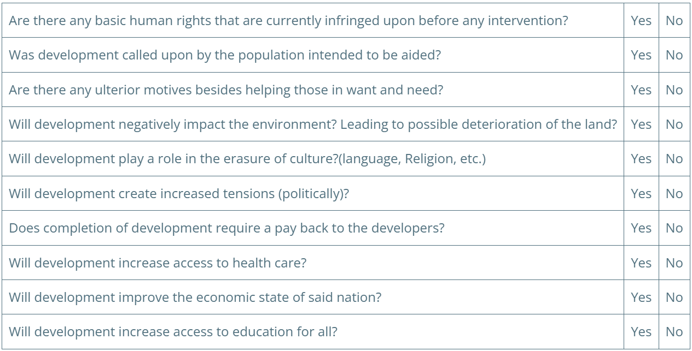
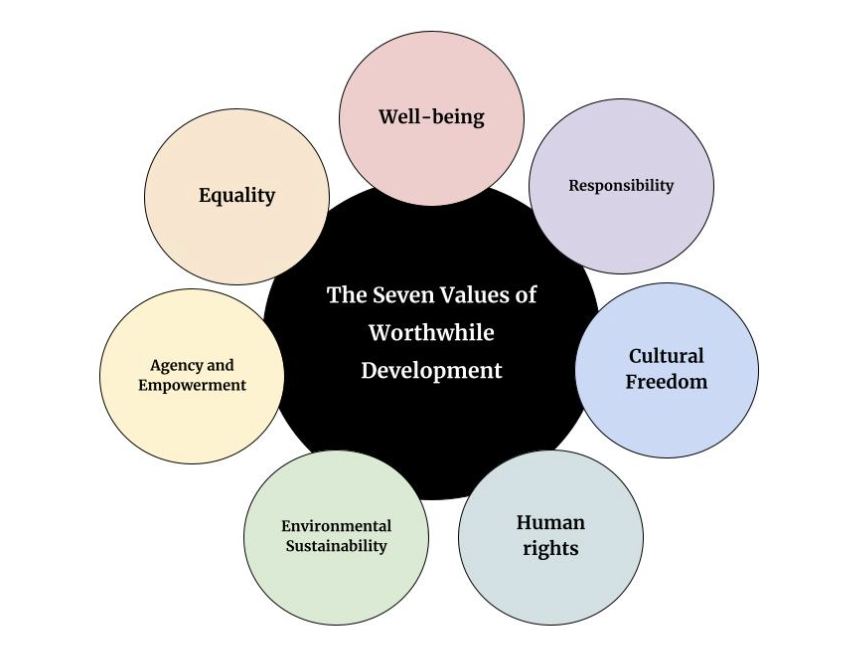

Intro to Development Ethics
Listen
What is Developmental Ethics and Maldevelopment?
Developmental ethics involves how human rights, basic needs, and social
justice are met throughout any form of the development process. Being
ethical, honest, and fair, is one of the basic human needs. It is important
to make sure that when development is taking place throughout the globe, no
matter the economic condition, culture, or religion of the country, ethics is
still a major focus. The concept of “development” was originally and is
often understood in the context of economic growth or improvement. Historically,
Development Planners focused on raising gross domestic product (GDP) and other
measures of financial success. (Goulet, Development Ethics a New Discipline,
1997, p. 1) However, beginning with the work of Denis Goulet and Louis-Joseph
Lebert in the 1970s, scholars have expanded upon the practice of development
through the field of “development ethics.” (Devulin, 2012, p. 218) According
to the United Nations Human Development Programme, development must first focus
on human improvement. (Ross-Larson & Hanlon, UNDP Human Development Report 1990,
p. iii) Goulet concurs, explaining that a nation’s success in development depends
on “many social, cultural, political, and psychological determinants.” (Development
Ethics a New Discipline, 1997, p. 1)
Developmental ethics revolves around Jay Drydyk’s seven worthwhile values:
well-being, equality, agency and empowerment, environmental sustainability,
human rights, cultural freedom, and responsibility. Each of these values
are important because they all work together to benefit development as a
whole. Well-being, equality and agency and empowerment go hand in hand because
all of them focus on how the development of the module or toolkit will directly
impact the citizens in that area or the individuals utilizing the toolkit.
Environmental sustainability is extremely important when developing because we
want our development to be able to last. If our development tactic negatively
affects the environment, it will have to be removed because we only get one
earth and we need to conserve and protect it. Both human rights and cultural
freedom are also extremely important to consider for development. We do not
want to impinge on an individual’s rights or cultural groups freedom because
it is unethical. The last value is responsibility. It is essential to be
responsible when developing and in the toolkit because our proposed strategies
can impact others in many ways, which needs to be accounted for. Each of
these values are crucial to conserve when developing in a country, city, or
area because they provide the citizens, who are being impacted, with a form
of protection.
Failure to consider these determinants can therefore lead to development that
harms the populations it is supposed to benefit, called “anti development” or
“maldevelopment.”According to Goulet, anti-development destroys or harms cultures
and individuals, (Development Ethics a New Discipline, 1997, p. 9) and it can be
the cause of “ecological disaster, which strips nature of its regenerative vitality”
(International Ethics and Human Rights, 1992, p. 239). Additionally, anti development
occurs in “the name of profit, some absolutized ideology, or a supposed efficiency
imperative” (Goulet, 1997, p.9). Essentially, cases of anti-development involve
projects that destroy cultures, people, or ecology, for the sake of profit gain,
ideological gain, or efficiency.
Our mission is to find a way to ensure that all organizations and governments,
whether they are public or private, are held accountable, and abide by the development
ethics guidelines we develop and put forth.
Development Ethics Module
The Development Ethics Module plans to introduce the concept and the expansive field
of development ethics into the GDD Toolkit. Our goal is to provide resources to allow
the ethical integration of cultures during the process of development. The object of
our work this semester is to synthesize important literature by development ethics
scholars for the second chapter of the Global Development and Design handbook. Our
Module will compile research examples of development ethics in practice to highlight
the importance of development ethics throughout development.
Contributions
Chapter 2 of GGD Handbook: What is Development Ethics?
Supplementation of Chapters 3 & 5: development ethics framework and datasets
Additionally, we will compile a reading list of development ethics research to supplement
the information we will be including in the GDD Toolkit, as the field is very expansive.
Mission Statement:
The Development Ethics Module plans to introduce the concept and field of development
ethics into the GDD Toolkit. We intend to synthesize important literature by development
ethics scholars for the second chapter of the handbook. Our Module will also find and
research examples of development ethics in practice. Additionally, we will compile a
reading list of development ethics research to utilize in the GDD Toolkit.
Objectives:
Create an introduction to the field of development ethics for the FIRE GDD Handbook.
Research and identify important development ethics concepts.
Examine cases of development ethics in practice.
Create a useful reading list from gathered sources for further research into development ethics.
What is Development? What are Ethics? What are Development Ethics?
Development:
a process of which results in the growth and progress, economically, physically,
politically, socially. Advancing the overall state of the subject.
Ethics:
the moral principle that helps govern one’s actions and assists in discerning between what is
“right” and what is “wrong.” It helps one navigate whether actions are moral in practice.
Essentially it is something that we all use in a different form, everyday, and is what is
used to support one’s doings.
Development Ethics:
the constant review of the ends, means and practices of development on a local,
national or global scale.
Approaches:
Evaluative: assesses progress in terms of tangible improvements that can physically be
evaluated such as a decrease in poverty, increased access to health care, increased education,
the measuring of gross national product, advances with technology, industrialization, etc.
Effectiveness: achieving development is dependent on the free agency of the people. This is
why with development ethics one must keep the people in mind and make sure that the projects
are relevant to them.
Field of Development Ethics:
The field of development ethics is based on the academic work of many scholars, which are
important to understanding the purpose of ethical development. One of the founding Development
Ethicists was the development planner Denis Goulet, who wrote that the materialistic and
purely economic view of development was lacking and harmful in the 1970s (Deneulin, Ethics
and Development, 2012, pg 218). Goulet described development ethics as “a question of values
and human attitudes, self-defined goals, and criteria for determining what are tolerable
costs to be borne in the course of change,” (Development Ethics A New Discipline, pg 2),
countering the predominant view of development at the time as the process of “identifying
and quantifying the composition of economic growth packages.” (Development Ethics A New
Discipline, pg 1) Goulet further described the core of ethical development, by explaining
that, “every person and society wants to be treated by others as a being of worth, for its
own sake and on its own terms, regardless of its utility or attractiveness to others.”
(Goulet as cited in Gasper, 2006, pg. 1) This is a good way for readers to examine the concept
of ethics in development, and one that should be strived for in the Global Development and
Design Toolkit. Humans want to be respected and understood, not just viewed as a means to an
end or a tool in an economic strategy. Therefore, while development may aspire to help a
struggling economy, it must never solely be focused on economics and always put the people first.
Another important figure in the field of development ethics is the economist and philosopher
Amartya Sen. Sen created the framework of the “capability approach,” which is of great
importance to ethical development. (Deneulin, Ethics and Development, 2012) The “capability
approach” suggests that “social arrangements should be primarily evaluated according to the
extent of freedom people have to promote or achieve functionings they value.” (Alkire, The
Capability Approach and Human Development, pg. 6) Essentially, the capability approach is when
situations are evaluated based on the actual freedoms people have and not based on the number
of resources that they possess or hold on paper. Severine Deneulin of the University of Bath
highlights the contradiction between capabilities and resources through the example of a family
that “may have considerable assets but the daughters may not go to school because of social norms
that hold that a woman’s place is at home.” (2006, pg. 220) In this scenario, the daughters do
not have the freedom to attend school because of the societal norms and traditions of the local
populace, limiting their capabilities. Another example of this concept could be a town that
nominally has access to public transportation, but due to conflict and frequent terrorist attacks,
the people feel intimidated enough to avoid using it. The “capability approach” is thus essential
to Development Ethics because it allows development planners to analyze what is limiting the
freedoms of others and how to improve the capabilities that people have.
Scholarship of development ethics has changed the way project planners conduct development worldwide.
In 1990, the United Nations Development Programme started compiling an annual Human Development
Report, which is strongly influenced by the development ethics field. These reports are an excellent
introduction to the problems that still need to be addressed by development ethicists, and to the
motivations that should drive it. In the introduction to the first-ever Human Development Report,
it explains that development is “more than GNP growth, more than income and wealth and more than
producing commodities and accumulating capital,” and that “human freedom is vital for human development.”
(Ross-Larson & Hanlon, 1990, pg. 1) The report additionally introduced the Human Development Index
(HDI), an aggregate of several basic capabilities that reflects the progress of development more
accurately than the Gross National Product (GNP). (Ross-Larson & Hanlon, Human Development Report
1990, 1990) Development planners should incorporate HDI targets into their planning, instead of solely
relying on GDP and GNP, as these can be misleading as to the true capabilities that a nation’s citizens
face.
How to Measure Marketing Campaign Effectiveness | Salesfusion

Question Number 1 serves as the principle question that one must ask themselves before embarking on a
development project. If the answer both number 1 and 2 are “No” it is strongly encouraged that one should
reconsider thoughts of development. If the answers on questions 3-7 are “Yes” it is also encouraged to
reconsider thoughts on development. However, If the answer to question 1 is “yes” regardless of whether
the people called for development it is encouraged to begin project planning, and give back the basic
rights that they were deprived of.
Related Readings:
The 1948 United Nations Universal Declaration of Human Rights, though it predates the field
of development ethics, is an excellent guide to respecting human rights. It can be found easily
online from the United Nations website.
Another United Nations resource is the 2019 Human Development Report, Beyond income, beyond averages,
beyond today: Inequalities in human development in the 21st century, which contains detailed
information about progress in development and is filled with informative and helpful graphs. It
additionally provides a wealth of information regarding what still needs to be done to better
development.
Denis Goulet’s 1997 article Development Ethics, a new discipline, published in the International
Journal of Social Economics, is an excellent explanation of the field of development ethics and
the debates surrounding its goals.
Martha Nausbaum is another major contributor to the field of development ethics who expanded
upon Sen’s capability approach. Her 2000 book, Women and Human Development, explores not only
issues of feminism and development, but also of what capabilities everyone should have access
to. (Nussbaum, 2000)
To summarize, development ethics puts emphasis on adhering to the people and their needs. First,
come the assessment of human rights and whether they are adhered to. The capability approach can
be utilized to determine the actual freedoms that individuals have, and what needs to be developed
to improve their capabilities. If development ensues, constant communication should be held with
the target population to receive input on the development. Developers should be mindful to ensure
that people are treated with respect and not reduce people to objects as part of a strategy.
Including these central focuses of global development allows for a better understanding of
cross-cultural values and to further implement the goal of Development Ethics. Additionally, users
can check out the development ethics checklist provided, to help in planning for development.
References:
Deneulin, S. (2013). Ethics and Development: An Introduction from the Perspective of the
Capability Approach. Geography Compass, 217-227. doi:10.1111/gec3.12029
Gasper, D. (2006). Introduction: Working in Development Ethics – a tribute to Denis Goulet.
Éthique Et économique, 1-24. Retrieved December 11, 2020, from
https://papyrus.bib.umontreal.ca/xmlui/handle/1866/3377
Goulet, D. (1997). Development ethics: A new discipline. International Journal of Social Economics,
24(11), 1160-1171. doi:10.1108/03068299710193543
Ross-Larson, B., & Hanlon, E. (Eds.). (1990). UNDP Human Development Report 1990 (Rep.). New York,
NY: Oxford University Press.
Image References:
Clipart Library. (2016–2019). Government Ethics Cliparts [Illustration].
Http://Clipart-Library.Com/Clipart/1931869.Htm. http://clipart-library.com/clipart/1931869.htm
Salesfusion. (2013–2020). How to Measure Marketing Campaign Effectiveness [Illustration].
Https://Www.Salesfusion.Com/Resource/How-to-Measure-Marketing-Campaign-Effectiveness/.
https://www.salesfusion.com/resource/how-to-measure-marketing-campaign-effectiveness/
University of Maryland First-Year Innovation and Research Experience (FIRE)Global Development
& Design (GDD)College Park, MD 20742


Make sure the economy is structured and strong, but do not focus solely on economic issues
Be aware of pre-existing conflicts and try to develop a plan that doesn’t exacerbate them
Plan with equity in mind (gender, ethnicity, age…)
Avoid corruption by evaluating the specific situation & determining what type of aid would work best
Be aware of social and cultural norms in the area
Be aware of the area’s important ecosystems and other environmental factors and plan around
them so as not to disrupt them and possibly cause a ripple effect
Consult with local leaders and the community to determine what they need the most
Ensure the policy or project factors in human outcomes.
Respect human rights and ensure projects do not exacerbate any current violations.
Ensure the plan addresses important needs of the population.
Our Mission: Be able to provide a sector of the toolkit that guides companies on how to take
ethics into account in their developmental processes and holds them accountable for unethical practices.